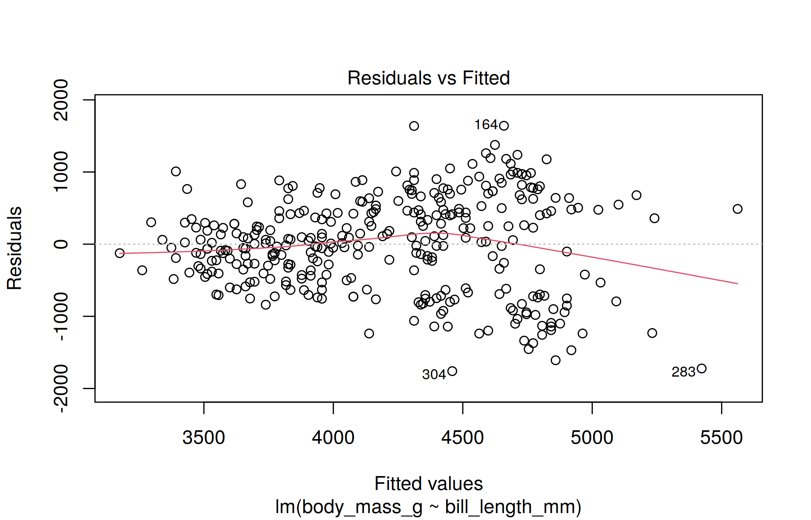
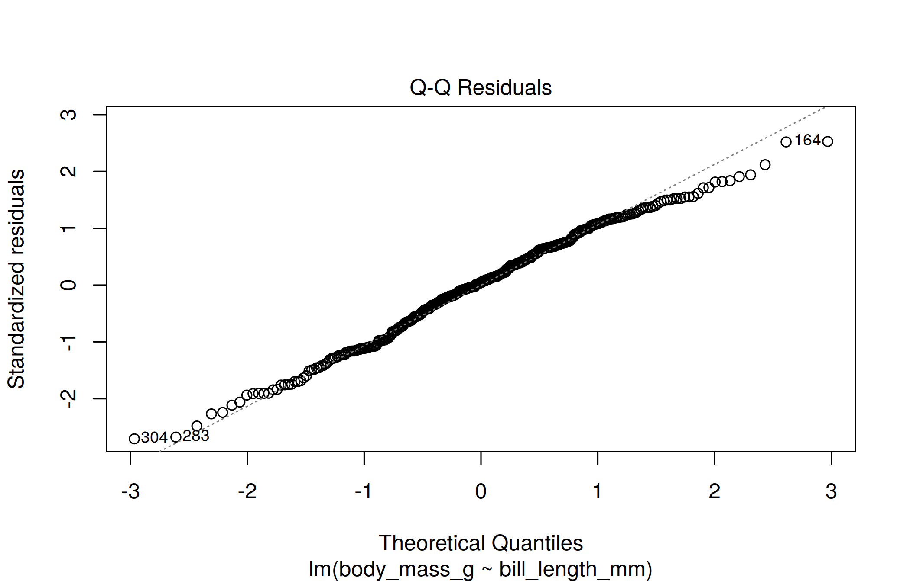
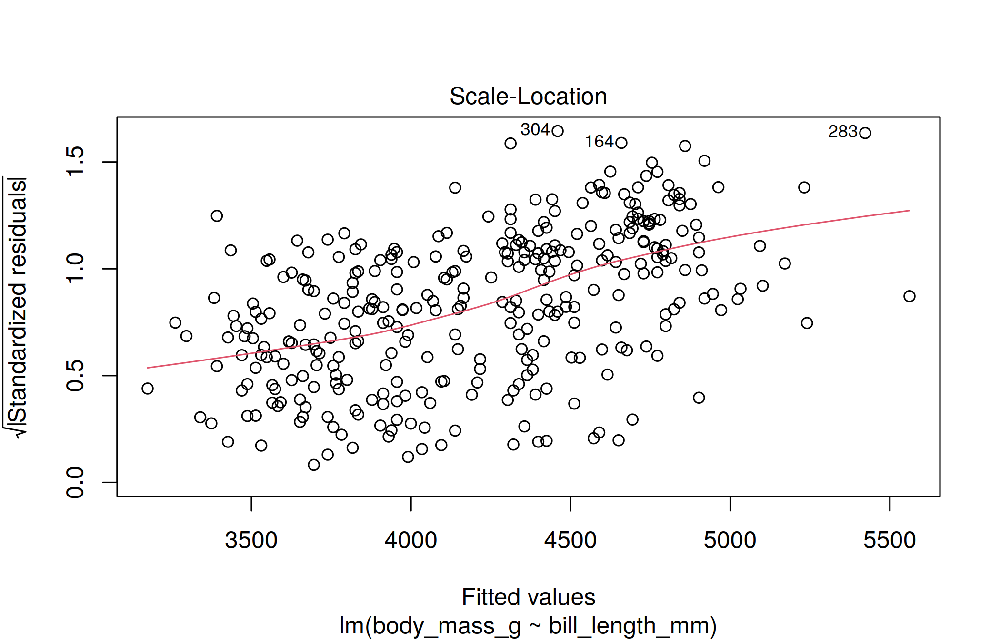
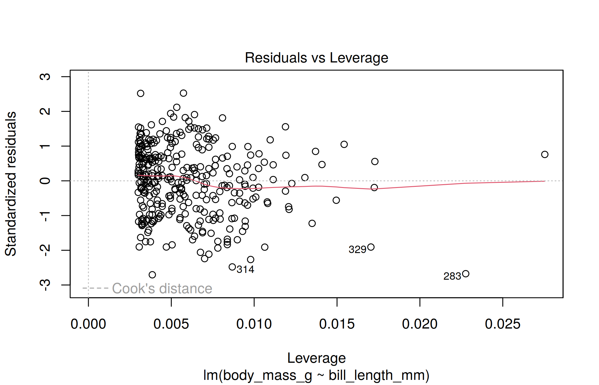
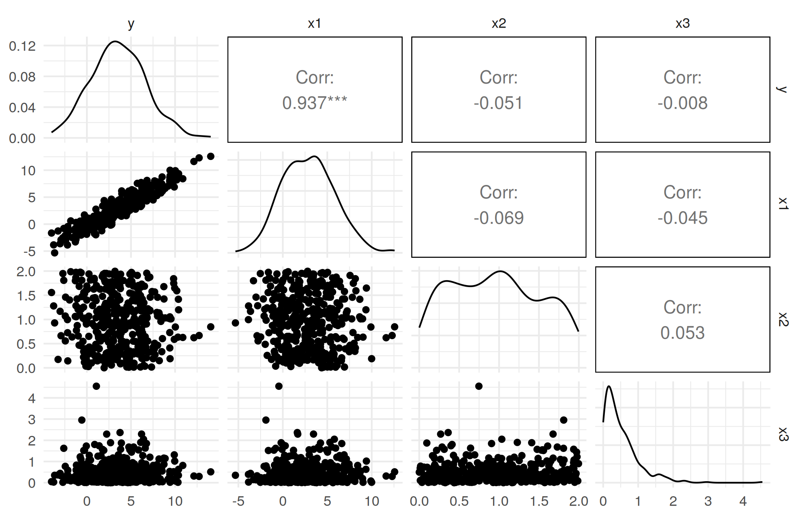

library(tidyverse) # should've already install.packages("tidyverse")
library(gapminder) # might need to install.packages("gapminder")
library(broom) # might need to install.packages("broom")
library(palmerpenguins) # might need to install.packages("palmerpenguins")
library(GGally) # might need to install.packages("GGally")
theme_set(theme_minimal())Week 2 seminar
Note
This is the student version of the notebook. The code you write goes where a line says # ... or has a ____. A code chunk with a blank starts with #| eval: false, so the file renders as it stands; delete that line once you have filled the blank. Working through the chunks one at a time in RStudio (Ctrl/Cmd+Enter) is unaffected. Answers are revealed in the seminar.
Before the seminar
The lecture stated two results and left their proofs to you (exercises 1 and 2), and proved a third, which you redo with the slides closed (exercise 3). Do all three on paper before the seminar; the seminar’s problems are variations on the first two. You may use, without proof, two facts about conditional expectation from ST102: the tower property, \(\mathbb E[Z] = \mathbb E\big[\mathbb E[Z \mid X]\big]\), and taking out what is known, \(\mathbb E[g(X)\, Z \mid X] = g(X)\, \mathbb E[Z \mid X]\) for any function \(g\) of \(X\) (given \(X\), a function of \(X\) is a constant).
WarningHints
Each exercise has hints, collapsed below it. Do not open a hint unless you have been stuck for at least a few minutes, and open them in order. Exercise 3’s proof is on the lecture slides. Solutions to exercises 1 and 2 are shown in the seminar if you ask.
Exercise 1 (optimal model theorem). Let \(\mathbb E Y^2 < \infty\), \(f^\star(x) = \mathbb E[Y \mid X = x]\) and \(R(f) = \mathbb E\big[(Y - f(X))^2\big]\). Show that for every \(f\) with \(\mathbb E f(X)^2 < \infty\), \[ R(f) = R(f^\star) + \mathbb E\big[(f^\star(X) - f(X))^2\big]. \] Conclude that \(f^\star\) has the smallest risk of all functions of \(X\), and that the excess risk of any \(f\), fitted by any method, is the one number \(\mathbb E[(f^\star(X) - f(X))^2]\).
NoteHint 1
Add and subtract \(f^\star(X)\) inside the square, then expand.
NoteHint 2
Show that the cross term, \(\mathbb E\big[(Y - f^\star(X))\,(f^\star(X) - f(X))\big]\), is zero.
NoteHint 3
Condition on \(X\) first (the tower property), then take out what is known.
Exercise 2 (omitted-variable bias). Two predictors matter: \(\mathbf y = \beta_1 \mathbf x_1 + \beta_2 \mathbf x_2 + \boldsymbol\varepsilon\), all vectors in \(\mathbb R^n\) and centered (the intercept partialled out, as in the lecture). What is fixed: the inputs \(\mathbf x_1\) and \(\mathbf x_2\), which we condition on. What is random: the noise, with \(\mathbb E\,\boldsymbol\varepsilon = \mathbf 0\), and through it \(\mathbf y\). Somebody regresses \(\mathbf y\) on \(\mathbf x_1\) alone and reports \(\hat\beta_{\text{short}} = \mathbf x_1^\top\mathbf y / \mathbf x_1^\top\mathbf x_1\), random through \(\mathbf y\). Show that \[ \mathbb E\big[\hat\beta_{\text{short}} \mid \mathbf x_1, \mathbf x_2\big] = \beta_1 + \beta_2\,\hat\delta, \qquad \hat\delta = \frac{\mathbf x_1^\top\mathbf x_2}{\mathbf x_1^\top\mathbf x_1}, \] say in words what \(\hat\delta\) is, and say why it carries no randomness. When is the short regression unbiased for \(\beta_1\)?
NoteHint 1
Substitute the model for \(\mathbf y\) inside \(\mathbf x_1^\top\mathbf y\) and split the fraction into three terms.
NoteHint 2
Two of the three terms are numbers once the inputs are fixed. Only the noise term is random: what is its expectation given the inputs?
Exercise 3 (partialling-out theorem). The lecture proved this one. Close the slides and prove it again. \(\mathbf X = [\mathbf X_1 \;\; \mathbf x_2]\) has full column rank, with the intercept column inside \(\mathbf X_1\); \(\mathbf M_1 = \mathbf I - \mathbf X_1(\mathbf X_1^\top\mathbf X_1)^{-1}\mathbf X_1^\top\) and \(\tilde{\mathbf x}_2 = \mathbf M_1\mathbf x_2\). You may use that \(\mathbf M_1\) is symmetric, that \(\mathbf M_1^2 = \mathbf M_1\) and that \(\mathbf M_1\mathbf X_1 = \mathbf 0\) (optional problem 4 proves all three). Show that the coefficient on \(\mathbf x_2\) in the least-squares regression of \(\mathbf y\) on \(\mathbf X\) is \[ \hat\beta_2 = \frac{\tilde{\mathbf x}_2^\top \mathbf y}{\tilde{\mathbf x}_2^\top \tilde{\mathbf x}_2}, \] and that regressing \(\tilde{\mathbf y} = \mathbf M_1\mathbf y\) on \(\tilde{\mathbf x}_2\) gives the same number. Where is full column rank used?
NoteHint 1
Start from the full regression and its normal equations: \(\mathbf y = \mathbf X_1\hat{\boldsymbol\beta}_1 + \mathbf x_2\hat\beta_2 + \mathbf r\), with \(\mathbf X_1^\top\mathbf r = \mathbf 0\) and \(\mathbf x_2^\top\mathbf r = 0\). Which matrix removes the \(\mathbf X_1\) term?
NoteHint 2
Multiply through by \(\mathbf M_1\) and say what happens to each of the three terms on the right. For the last one, write \(\mathbf M_1\mathbf r = \mathbf r - \mathbf X_1(\mathbf X_1^\top\mathbf X_1)^{-1}\mathbf X_1^\top\mathbf r\).
NoteHint 3
You now have \(\mathbf M_1\mathbf y = \tilde{\mathbf x}_2\,\hat\beta_2 + \mathbf r\): a vector equation with one unknown number. Multiply by a row vector that turns it into a scalar equation in which the coefficient of \(\hat\beta_2\) is positive.
NoteHint 4
After multiplying by \(\tilde{\mathbf x}_2^\top = \mathbf x_2^\top\mathbf M_1\), two things remain: the term \(\tilde{\mathbf x}_2^\top\mathbf r\), and an extra \(\mathbf M_1\) on the left side. Each goes away by one of the properties of \(\mathbf M_1\) you were given.
Problems
Problem 1 (the constant predictor). The setting of exercise 1.
Take \(f\) to be a constant \(c\). Which \(c\) minimizes \(R(c)\), and what is \(R(c)\) at the minimum? Express the answer in terms of \(R(f^\star)\) and \(\mathrm{Var}\big(f^\star(X)\big)\).
Deduce that \(\mathrm{Var}(Y) = R(f^\star) + \mathrm{Var}\big(f^\star(X)\big)\), and write both terms on the right as conditional moments of \(Y\) given \(X\). Which identity from ST102 is this?
Week 1 scored methods by squared error on held-out data. Imagine two oracle entries: one predicts \(\mathbb E Y\) for everyone, the other is \(f^\star\). What is the gap between their risks? On an actual leaderboard the constant entry uses the training mean \(\bar y\) and the best entry is some fitted \(\hat f\); give two reasons the observed gap need not equal that quantity. For a predictor fitted and chosen without using the test set, can its expected held-out squared error be below \(R(f^\star)\)?
Problem 2 (leaving a variable out, exactly). The setting of exercise 2, but forget the truth: let \(\hat\beta_1\) and \(\hat\beta_2\) be the least-squares coefficients from the long regression of \(\mathbf y\) on both \(\mathbf x_1\) and \(\mathbf x_2\), with residual \(\mathbf r\), so that \(\mathbf y = \hat\beta_1\mathbf x_1 + \hat\beta_2\mathbf x_2 + \mathbf r\).
Show that \(\hat\beta_{\text{short}} = \hat\beta_1 + \hat\beta_2\,\hat\delta\) exactly, with no expectation. Which fact about \(\mathbf r\) did you use?
Numbers: \(\mathbf x_1 = (-1, 0, 1)\), \(\mathbf x_2 = (-2, 1, 1)\), \(\beta_1 = 1\), \(\beta_2 = 2\). Compute \(\hat\delta\), and what the short regression estimates on average.
Suppose \(\mathbf x_1^\top\mathbf x_2 = 0\). What happens to the coefficient on \(\mathbf x_1\) when \(\mathbf x_2\) is dropped? Reconcile your answer with the partialling-out theorem: what is the residual of \(\mathbf x_1\) after regressing it on \(\mathbf x_2\)?
Optional, can be done at home
Problem 3 (normal equations, and centering). Simple regression, from the lecture’s “nice geometry” slide. The training error is \(\hat R_n(\alpha, \beta) = \frac1n\sum_{i=1}^n (y_i - \alpha - \beta x_i)^2\).
Compute \(\partial \hat R_n/\partial\alpha\) and \(\partial \hat R_n/\partial\beta\), set both to zero, and show that the residuals \(r_i = y_i - \hat\alpha - \hat\beta x_i\) satisfy \(\sum_i r_i = 0\) and \(\sum_i x_i r_i = 0\). Write the same two equations as \(\mathbf X^\top \mathbf r = \mathbf 0\) with \(\mathbf X = [\mathbf 1 \;\; \mathbf x]\).
Solve them: show \(\hat\beta = \sum_i (x_i - \bar x)(y_i - \bar y) \big/ \sum_i (x_i - \bar x)^2\) and \(\hat\alpha = \bar y - \hat\beta \bar x\).
In the partialling-out theorem take \(\mathbf X_1 = \mathbf 1\), the column of ones, and \(\mathbf x_2 = \mathbf x\). What is \(\mathbf M_1 \mathbf x\)? Conclude that the slope of \(\mathbf y\) on \(\mathbf x\) in a regression with an intercept is the slope through the origin of the centered \(\mathbf y\) on the centered \(\mathbf x\), and check that this is (b).
NoteHint 1
- Differentiate one term of the sum first. (b) Use the first equation to eliminate \(\hat\alpha\) from the second.
NoteHint 2
- \(\mathbf H_1 = \mathbf 1(\mathbf 1^\top\mathbf 1)^{-1}\mathbf 1^\top\): what is \(\mathbf 1^\top\mathbf 1\), and what does \(\mathbf H_1\) do to a vector?
Problem 4 (the hat matrix). \(\mathbf X\) is \(n \times q\) with full column rank (\(q = p + 1\) columns, the intercept counted), \(\mathbf H = \mathbf X(\mathbf X^\top\mathbf X)^{-1}\mathbf X^\top\) and \(\mathbf M = \mathbf I - \mathbf H\).
Show \(\mathbf H^2 = \mathbf H\) and \(\mathbf H^\top = \mathbf H\), and compute \(\mathrm{tr}(\mathbf H)\).
Show \(\mathbf M^2 = \mathbf M\), \(\mathbf M^\top = \mathbf M\) and \(\mathbf M \mathbf X = \mathbf 0\). In one sentence each: what is \(\mathbf H\mathbf y\), and what is \(\mathbf M\mathbf y\)?
Use (b) to show that the residual vector \(\mathbf r = \mathbf M\mathbf y\) satisfies \(\mathbf X^\top \mathbf r = \mathbf 0\) (the normal equations again, from the geometry instead of the calculus). Where did full column rank get used?
NoteHint 1
- For the trace, \(\mathrm{tr}(\mathbf A\mathbf B) = \mathrm{tr}(\mathbf B\mathbf A)\) with \(\mathbf A = \mathbf X\).
NoteHint 2
- Write \(\mathbf X^\top\mathbf r = \mathbf X^\top\mathbf M\mathbf y\) and use \(\mathbf M^\top = \mathbf M\) to move \(\mathbf M\) onto \(\mathbf X\).
Problem 5 (a zero slope with a predictable outcome). Let \(X\) take the values \(-1, 0, 1\) with probability \(1/3\) each, let \(\varepsilon\) be independent of \(X\) and take the values \(-1, 1\) with probability \(1/2\) each, and let \(Y = X^2 + \varepsilon\).
Find \(f^\star(x)\) under squared loss, and its risk \(R(f^\star)\).
Find the best linear predictor \(a + bX\), the minimizer of \(\mathbb E[(Y - a - bX)^2]\), and its risk. Compute \(\mathrm{Cov}(X, Y)\).
What does the example say about using correlation to decide whether \(X\) predicts \(Y\)? Which result from the lecture gives the excess risk of the best line, and what is it here?
NoteHint 1
- \(\mathbb E[Y \mid X = x]\) is \(x^2\) plus the mean of the noise.
NoteHint 2
- The best line’s slope is \(\mathrm{Cov}(X, Y)/\mathrm{Var}(X)\); compute \(\mathbb E X^3\). Its risk is then the variance of something.
Problem 6 (why collinearity makes a coefficient uncertain). Fixed design: \(\mathbf y = \mathbf X_1\boldsymbol\beta_1 + \mathbf x_2\beta_2 + \boldsymbol\varepsilon\) with \(\mathbb E\,\boldsymbol\varepsilon = \mathbf 0\) and \(\mathrm{Cov}(\boldsymbol\varepsilon) = \sigma^2\mathbf I\), full column rank, and \(\tilde{\mathbf x}_2 = \mathbf M_1\mathbf x_2\) as in the lecture.
Use the partialling-out theorem to show that \(\hat\beta_2 = \beta_2 + \tilde{\mathbf x}_2^\top\boldsymbol\varepsilon / \tilde{\mathbf x}_2^\top\tilde{\mathbf x}_2\). Which two facts about \(\mathbf M_1\) do you need?
Find \(\mathbb E\,\hat\beta_2\) and \(\mathrm{Var}(\hat\beta_2)\).
What happens as \(\mathbf x_2\) becomes almost a linear combination of the columns of \(\mathbf X_1\)? Compare two designs with \(\tilde{\mathbf x}_2^\top\tilde{\mathbf x}_2 = 100\) and \(\tilde{\mathbf x}_2^\top\tilde{\mathbf x}_2 = 4\), with the same \(\sigma^2\).
NoteHint 1
- The theorem gives \(\hat\beta_2 = \tilde{\mathbf x}_2^\top\mathbf y/\tilde{\mathbf x}_2^\top\tilde{\mathbf x}_2\); substitute the model for \(\mathbf y\).
NoteHint 2
- You need \(\tilde{\mathbf x}_2^\top\mathbf X_1 = \mathbf 0\) and \(\tilde{\mathbf x}_2^\top\mathbf x_2 = \tilde{\mathbf x}_2^\top\tilde{\mathbf x}_2\): which property of \(\mathbf M_1\) gives each? (b) For the variance of a ratio with a fixed denominator, square the denominator.
Coding
1. Matrices and vectors in R
The lecture’s formula \(\hat\beta = (\mathbf X^\top\mathbf X)^{-1}\mathbf X^\top\mathbf y\) is a few lines of R.
Optional, can be done at home: the pieces
Skip to step 1 if %*%, t() and solve() are familiar.
# byrow = FALSE default
x <- matrix(1:9, nrow = 3, ncol = 3)
x [,1] [,2] [,3]
[1,] 1 4 7
[2,] 2 5 8
[3,] 3 6 9beta <- rep(1, 3)
beta[1] 1 1 1Multiplication is %*% (yes, really). Beware “Error: non-conformable arguments”; always check dimensions. If the dimension of one object divides the dimension of another, R may “conveniently” (unintuitively) repeat the smaller one.
dim(x)[1] 3 3dim(beta) # frustratingNULLx %*% beta [,1]
[1,] 12
[2,] 15
[3,] 18Transpose and symmetry: even if a matrix \(\mathbf A\) is not square, both \(\mathbf A^\top\mathbf A\) and \(\mathbf A\mathbf A^\top\) are square and symmetric (often one is invertible).
A <- matrix(c(rep(1, 4), 0, 0), nrow = 3, byrow = FALSE)
A [,1] [,2]
[1,] 1 1
[2,] 1 0
[3,] 1 0t(A) %*% A [,1] [,2]
[1,] 3 1
[2,] 1 1Pseudoinversion: ginv() in the MASS library (installed with R) computes \(\mathbf A^\dagger = (\mathbf A^\top\mathbf A)^{-1}\mathbf A^\top\) when that exists, so \(\mathbf A^\dagger\mathbf A = \mathbf I\); it is a left inverse here, not a right one.
Ainv <- MASS::ginv(A)
Ainv %*% A # the 2 x 2 identity matrix [,1] [,2]
[1,] 1 1.665335e-16
[2,] 0 1.000000e+00A %*% Ainv # not a right inverse [,1] [,2] [,3]
[1,] 1.000000e+00 5.551115e-17 5.551115e-17
[2,] 1.665335e-16 5.000000e-01 5.000000e-01
[3,] 1.665335e-16 5.000000e-01 5.000000e-01The formula
Step 1. Take the 2007 countries, build the design matrix for lifeExp ~ lgdp + lpop with model.matrix (it adds the column of ones), and compute \(\hat\beta\) from the formula. Compare with lm.
gm <- gapminder |>
filter(year == 2007) |>
mutate(lgdp = log10(gdpPercap), lpop = log10(pop))
X <- model.matrix(lifeExp ~ lgdp + lpop, data = gm)
y <- gm$lifeExp
head(X, 3) (Intercept) lgdp lpop
1 1 2.988818 7.503653
2 1 3.773569 6.556366
3 1 3.794025 7.522877# beta_hat <- solve(____ %*% ____) %*% ____ %*% ____
# cbind(formula = beta_hat, lm = coef(lm(lifeExp ~ lgdp + lpop, data = gm)))
# ...Checkpoint (run it; if it stops, check the order of the factors in the formula):
stopifnot(isTRUE(all.equal(as.numeric(beta_hat),
as.numeric(coef(lm(lifeExp ~ lgdp + lpop, data = gm))))))Optional, can be done at home: the hat matrix
Step 2. Build the hat matrix \(\mathbf H = \mathbf X(\mathbf X^\top\mathbf X)^{-1}\mathbf X^\top\) and check two of its properties numerically: its trace, and that \(\mathbf H\mathbf y\) is fitted(lm(...)). (Optional problem 4 proves them.)
# H <- ____
# c(trace = sum(diag(H)), n = nrow(X), q = ncol(X))
# all.equal(as.numeric(H %*% y), as.numeric(fitted(lm(lifeExp ~ lgdp + lpop, data = gm))))
# ...Question 1. The trace came out as a small integer. Which one, and why?
2. Regression on real data
In this part you are encouraged to use a dataset that you found interesting. Your dataset should have a numeric outcome variable and multiple predictor variables, and at least one of the predictors should also be numeric. Your dataset should not have any special structure that would clearly violate independence assumptions, e.g. observations with possible spatial or temporal correlation (the gapminder data above uses one year for this reason, so the same country is not repeated).
Note: we also cannot deal with missing values right now so you may use drop_na(). The default below is the penguins.
# Load dataset and pre-process if necessary
penguins |>
drop_na() -> my_data # bad syntax, but fun!Step 1. Choose one predictor variable and fit a simple linear model. Then use each of these functions on the model object and try to understand the output: summary, predict, residuals, coef, confint, plot.
Many of these are shortcut functions that can be used on many different types of objects, e.g. models fit by other methods. To learn more about a function f type ?f in the console, and to see how it works on linear model objects type ?f.lm, e.g. ?plot.lm.
model_simple <- lm(body_mass_g ~ bill_length_mm, data = my_data)
summary(model_simple)
Call:
lm(formula = body_mass_g ~ bill_length_mm, data = my_data)
Residuals:
Min 1Q Median 3Q Max
-1759.38 -468.82 27.79 464.20 1641.00
Coefficients:
Estimate Std. Error t value Pr(>|t|)
(Intercept) 388.845 289.817 1.342 0.181
bill_length_mm 86.792 6.538 13.276 <2e-16 ***
---
Signif. codes: 0 '***' 0.001 '**' 0.01 '*' 0.05 '.' 0.1 ' ' 1
Residual standard error: 651.4 on 331 degrees of freedom
Multiple R-squared: 0.3475, Adjusted R-squared: 0.3455
F-statistic: 176.2 on 1 and 331 DF, p-value: < 2.2e-16# predict(model_simple) ; residuals(model_simple) ; coef(model_simple) ; confint(model_simple)
# ...plot(model_simple)



Question 2. How do we interpret diagnostic plots?
Step 2 (optional, can be done at home). Create a scatterplot showing your simple linear model (just like last week: geom_point, then geom_smooth(method = "lm")).
# my_data |> ggplot(aes(x = ____, y = ____)) + ____ + ____
# ...Step 3. Multiple linear regression: repeat with a model using more than one predictor, and notice what’s different about the output. Then use tidy and glance from the broom package and compare with summary (see ?tidy.lm; piping tidy() into knitr::kable() formats it nicely), and draw the coefficients with their intervals using ggcoef from GGally.
model_multiple <- lm(
body_mass_g ~ bill_length_mm + bill_depth_mm + sex,
data = my_data)
# tidy(model_multiple, conf.int = TRUE) |> knitr::kable(digits = 2)
# glance(model_multiple) |> knitr::kable(digits = 3)
# ggcoef(____)
# ...Optional, can be done at home
GGally also has ggnostic, a grid of diagnostic plots for a multiple model, one column per predictor.
# ggnostic(____)
# ...There is also a function ggpairs useful for exploratory data analysis, but beware that it can be slow because it computes many pairwise plots. You may not want to rerun that code many times. There is an option cache: true that saves the result after running it once and then refuses to run it again unless you change the code chunk. You can also leave out variables you don’t want to include using select(-var1, -var2, ...) or choose only some to include with select(var1, var2, ...). Also see useful helper functions like ?tidyselect::starts_with.
# my_data |>
# select(-year, -island) |>
# ggpairs(progress = FALSE)
# ...Step 4. Pick at least one numeric predictor and include a non-linear transformation, e.g. a polynomial y ~ poly(x, d) or an interaction y ~ x1 * x2. Use glance, tidy and plot again on this model and note any differences.
# model_transformed <- lm(____ ~ poly(____, 2) + ____, data = my_data)
# glance(model_transformed)$r.squared
# ...Question 3. The pair plots from e.g. ggnostic or ggpairs show many 2-dimensional projections of the data, but there is no guarantee that these projections together help us understand higher dimensional relationships. What does this mean for diagnostic plots when our regression model is high dimensional (e.g. \(p > 3\) predictors)?
3. Partialling out, and the omitted variable
Back to the 2007 countries: life expectancy on log GDP per capita, log population and continent.
long <- lm(lifeExp ~ lgdp + lpop + continent, data = gm)
tidy(long) |> knitr::kable(digits = 2)| term | estimate | std.error | statistic | p.value |
|---|---|---|---|---|
| (Intercept) | 19.42 | 7.46 | 2.60 | 0.01 |
| lgdp | 10.69 | 1.24 | 8.63 | 0.00 |
| lpop | 0.09 | 0.81 | 0.11 | 0.91 |
| continentAmericas | 11.66 | 1.69 | 6.89 | 0.00 |
| continentAsia | 10.05 | 1.58 | 6.37 | 0.00 |
| continentEurope | 11.23 | 1.93 | 5.83 | 0.00 |
| continentOceania | 12.89 | 4.55 | 2.83 | 0.01 |
Step 1. The partialling-out theorem says the coefficient on lgdp is the slope of lifeExp on the part of lgdp that the other columns cannot explain. Check it: regress lgdp on the other predictors (intercept included), keep the residual, and regress lifeExp on that residual. The two numbers should agree to every printed digit.
# lgdp_tilde <- resid(lm(____ ~ ____, data = gm))
# c(full = coef(long)[["lgdp"]],
# y_on_residual = coef(lm(gm$lifeExp ~ lgdp_tilde))[[2]])
# ...Checkpoint:
stopifnot(isTRUE(all.equal(coef(long)[["lgdp"]], coef(lm(gm$lifeExp ~ lgdp_tilde))[[2]])))Question 4. In one sentence, what is the coefficient on lgdp in long the slope of? Your neighbor regressed the residual of lifeExp (on lpop and continent) on lgdp_tilde and got the same number. Why is that not a coincidence?
Step 2. Now leave lpop out. Fit the short regression lifeExp ~ lgdp + continent, and the auxiliary regression of the omitted variable on what was kept, lpop ~ lgdp + continent. Check problem 2(a): the short coefficient on lgdp equals the long one plus the long coefficient on lpop times the auxiliary slope, exactly.
# short <- lm(____, data = gm)
# aux <- lm(____, data = gm)
# c(short = coef(short)[["lgdp"]],
# long_plus_correction = coef(long)[["lgdp"]] + coef(long)[["lpop"]] * coef(aux)[["lgdp"]])
# ...Question 5. Did leaving out lpop move the coefficient on lgdp by much, and in which direction? Exercise 2 names two things the size of the move depends on; which of them is small here? Is the short coefficient “wrong”?
4. Regression models with simulated data
Now we want to simulate data in various ways, fit regression models to the data while pretending we don’t know how it was generated, and then see how those models perform. We want to understand the limitations of regression models. If something was wrong with the model, would we be able to tell?
Choose a functional form for the true outcome data generation process:
f <- function(x1, x2, x3) x1 + 2*x2 - x2^2 # change thisGenerate several predictor variables, an error term, and an outcome:
simulate_data <- function(n) {
x1 <- rnorm(n, mean = 3, sd = 3) # change
x2 <- runif(n, min = 0, max = 2) # change
x3 <- rexp(n, rate = 2) # change
errors <- rnorm(n, sd = 1) # change
y <- f(x1, x2, x3) + errors
data.frame(y = y,
x1 = x1,
x2 = x2,
x3 = x3)
}Generate one dataset and use ggpairs to show pair plots:
n <- 400
sim_data <- simulate_data(n)
ggpairs(sim_data, progress = FALSE)
Step 1. Fit lm(y ~ ., data = sim_data) (every column as a predictor) and look at the coefficients with their intervals (tidy, then ggcoef). Before you look: which coefficients do you expect to be near zero?
# my_model <- lm(____, data = sim_data)
# tidy(my_model, conf.int = TRUE) |> knitr::kable(digits = 2)
# my_model |> ggcoef()
# ...Question 6. x2 is in the true function, and its coefficient is close to zero (and x3 is not in the truth). Why? Hint: what is the least-squares slope of \(2x_2 - x_2^2\) on \(x_2\) when \(x_2 \sim U(0, 2)\)? Then plot the residuals against x2 (augment(my_model) from broom gives a data frame with a .resid column). Would part 2’s diagnostics have caught this?
augment(my_model) |>
ggplot(aes(x2, .resid)) +
geom_point(alpha = 0.5) +
geom_smooth(se = FALSE)Optional, can be done at home
Experiment. Repeat the steps above, making various choices: the number and distributions of predictor variables; the form of the true outcome generating function; the distribution of the noise (either just changing sd or using some other centered distribution); the sample size; the choice of fitted model (poly(x2, 2)?); which aspect of the model to interpret or check against the truth.
Challenge: can you find some potential dangers of using regression models, where the model is wrong in some important way and our diagnostic methods fail to show us the problem? (A missing piece that depends on two inputs at once is a good place to start.)
Challenge: what are some strengths or robustness properties of regression models that we should appreciate and trust in the long run? i.e. are there ways the model can be wrong but our conclusions from it will still (usually?) be good enough to use anyway?